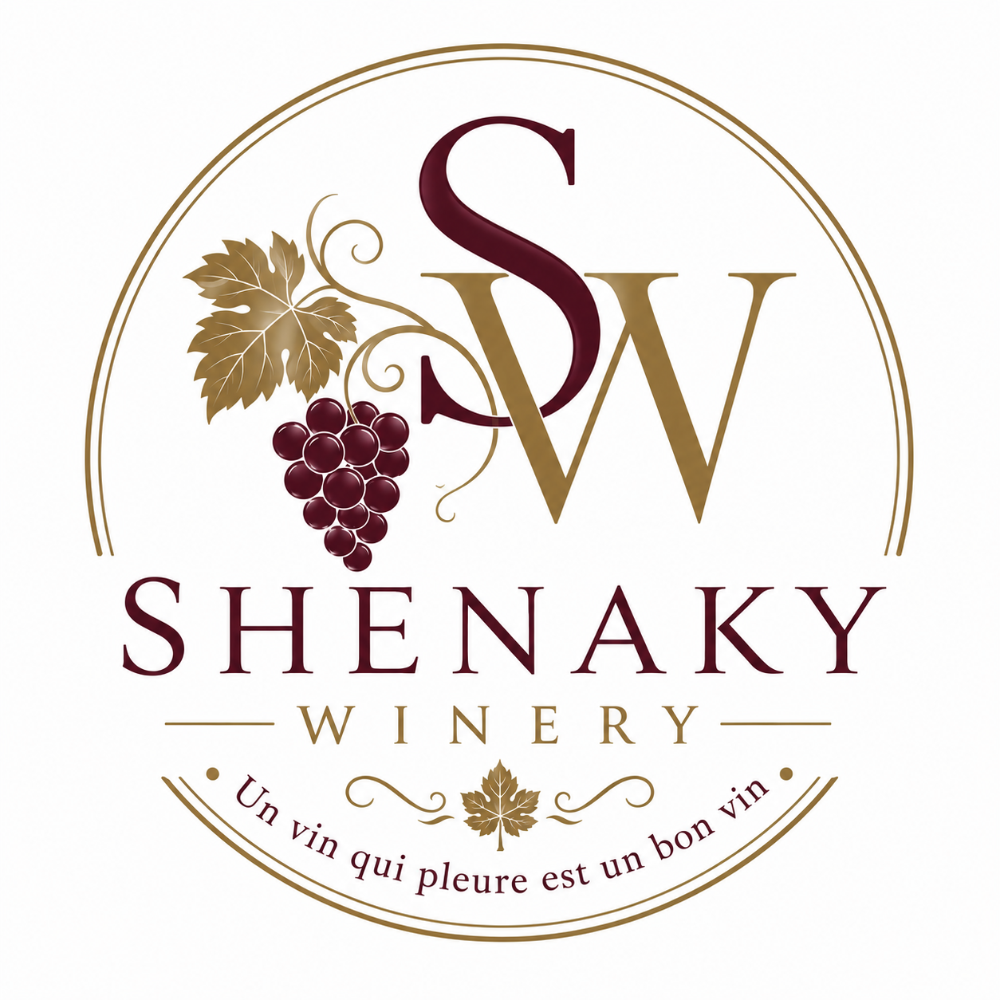

2025 Merlot
ABV 14%
Un Merlot californien artisanal aux notes de cerise noire, de prune et de chêne subtil. Souple, accessible et équilibré.
Bientôt disponible

Domaine boutique en Californie
Des vignobles d’Istalif, à travers la France, jusqu’aux vignobles de Californie
Vinification depuis 2009
Shenaky Winery est un domaine boutique californien dédié aux vins artisanaux, à l’hospitalité et à une histoire authentique.
Notre histoire
Shenaky Winery commence par un parcours plutôt que par un simple projet commercial. Son inspiration remonte à Shenaky, un village du district historique d’Istalif, une région depuis longtemps associée aux vignobles, aux vergers et aux paysages de montagne.
Les années passées en France ont approfondi l’appréciation du fondateur pour le vin comme culture, hospitalité, famille et tradition. La Californie est ensuite devenue le lieu où ces influences se sont réunies à travers une vinification commencée en 2009.
Sélection actuelle
Shenaky Winery ne suit pas un calendrier de production fixe. Les vins peuvent varier d’une année à l’autre selon la qualité de la récolte et les choix du vigneron.
ABV 14%
Un Merlot californien artisanal aux notes de cerise noire, de prune et de chêne subtil. Souple, accessible et équilibré.
Bientôt disponible
ABV 15%
Profond en couleur et puissant en bouche, avec des fruits noirs, des épices, de la structure et une longue finale.
Bientôt disponible
ABV 14%
Vif et rafraîchissant, avec une belle acidité et une expression fruitée.
Bientôt disponible
ABV 14%
Un vin blanc aromatique aux notes florales, au fruit expressif et à la finale rafraîchissante.
Bientôt disponible
ABV 18%
Un vin de dessert élaboré à partir de jus de Riesling sélectionné, avec un fruit riche, une douceur équilibrée et une finale souple.
Bientôt disponible
Distinctions
Les distinctions soutiennent l’histoire de Shenaky Winery sans la définir. Elles représentent des encouragements dans un parcours continu d’apprentissage, de savoir-faire et d’amélioration.
Commande en ligne à venir
La commande en ligne sera ajoutée uniquement lorsque le domaine sera prêt à vendre par l’intermédiaire d’un partenaire conforme aux règles du commerce du vin.
Contact